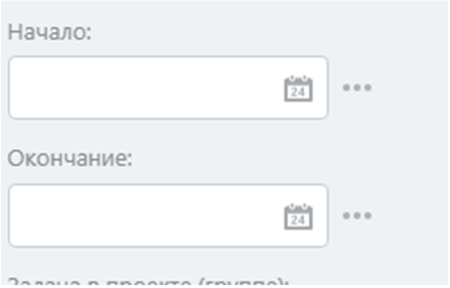
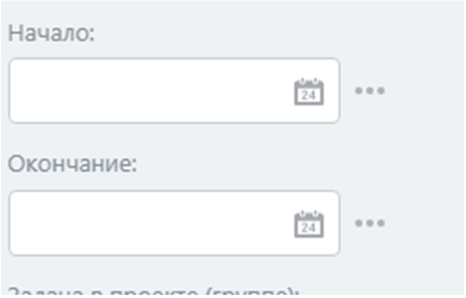

🛠️ Пошаговая инструкция по созданию робота
Робот, который ставит задачу, срабатывает, когда сделка или другой элемент попадает на заданный этап воронки. Следуйте этим шагам:
- Откройте настройки воронки:
- Перейдите в раздел CRM → Настройки → Воронки и туннели.
- Выберите нужную воронку (например, «Продажи»).
- Кликните на этап, где будет работать робот (например, «Ожидание ответа»).

- Добавьте робота:
- Нажмите «Добавить робота».
- Выберите действие «Создать задачу».

- Настройте режим срабатывания:
- После предыдущего робота: Робот выполняется после завершения предыдущего робота в списке.
- Независимо от других роботов: Робот срабатывает сразу при попадании на этап.

- Задайте время срабатывания:
- Текущее время: Робот срабатывает сразу.
- Через: Через заданное время (минимум 10 минут, например, через 1 час).
- За: За время до события (например, за 1 день до оплаты).
- Точное время: В указанный день и час (например, в 09:00).
- Учитывать рабочее время: Только в рабочие часы компании или сотрудника, исключая выходные, праздники или отпуска.
Ограничение: Нельзя настроить срабатывание на определенный день недели (например, каждую субботу) или число месяца (например, 25-го).

- Настройте параметры задачи:
- Укажите постановщика, исполнителя и наблюдателя.
- Задайте время начала и крайний срок выполнения.

- Настройка дополнительных параметров задачи:
- Проставьте, во сколько задача начнется выполняться и когда должна быть закончена.
- Дополнительные функции:
- Задача в проекте: Прикрепить задачу к проекту.
- Теги: Добавить задаче тег.
- Связанные задачи: Связать эту задачу с другой задачей.
- Чек-лист: Добавить по этой задаче чек-лист.
- Важная задача: Отметить эту задачу важной.
- Разрешить ответственному менять крайний срок задачи: Позволить исполнителю изменять сроки.
- Включить учет времени по задаче: Отслеживать время выполнения.
- Проконтролировать задачу после завершения: Постановщику придет уведомление о завершении, задача перейдет в статус «Ждет контроля» и завершится только после подтверждения.
- Не завершать задачу без результата: Для завершения система потребует от исполнителя прикрепить результат в комментарий к задаче и отметить его как комментарий.
 


Пример: В фитнес-центре робот на этапе «Пробное занятие» создает задачу тренеру с чек-листом, тегом «Срочное» и требованием результата в комментарии, срабатывая через 1 час в рабочее время.
✅ Выход: Настроенный робот для автоматизации задач в CRM.